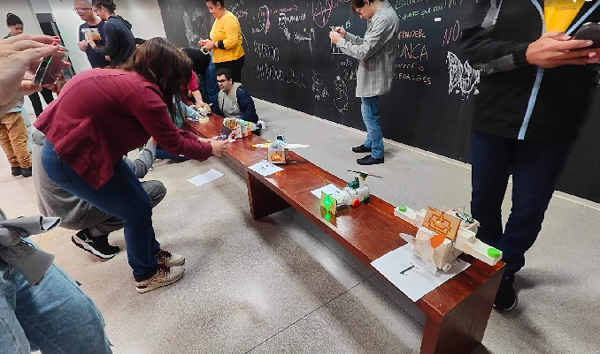

Meus projetos

Títulos Corinthians
Aqui você verá os titulos mais importantes do Corinthians
- Mundia de clubes de 2000 e 2012
- Libertadores da América de 2012
- Paulista de 1977

Seleção Brasileira
Meu país de origem, onde amo de coração, vive e morre por ele com todo amor, seus jogos são lindos, alegres e tem alegria nas pernas, é lindo torcer e viver pela maior selção do mundo.

AC Milan
Meu time do coração fora do Brasil, o maior clube da Itália, onde várias lendas já jogaram e brilharam com essa camisa Rossonera.